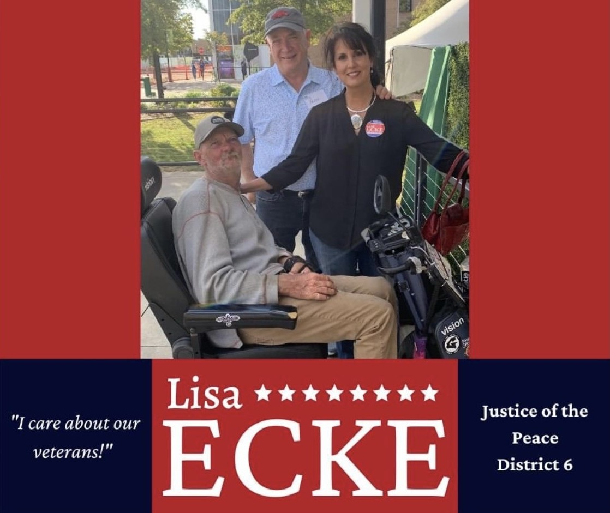
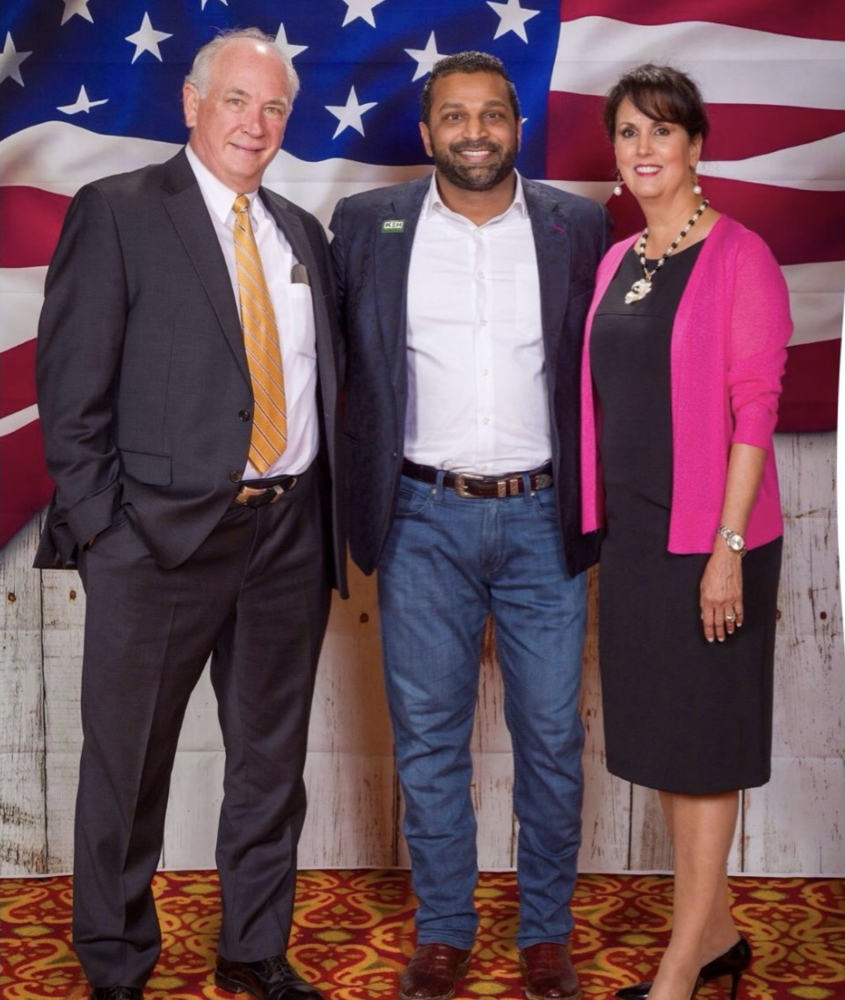

LISA ECKE
Justice of the Peace • District 6
Dedicated to serving the people of Washington County, Arkansas.
Great Leadership begins with great purpose. My purpose is to lead Washington County to a brighter future.— LISA ECKE, JP DISTRICT 6

Lisa Ecke - Dedicated to District 6Dedicated to Our Community
Lisa is dedicated to her life mission: Helping improve the lives of others and investing in the next generation by mentoring them along their life journey.
Married to her husband Roger, they have lived and raised their family in Springdale, Arkansas for 25 years. Lisa is a proud wife, mother, and grandmother of two adorable little girls.
As a business owner, Lisa understands what it takes to lead an enterprise successfully. Lisa knows how to organize, execute daily operations, provide great customer service, and manage budgets. She brings that dedication and work ethic to the Quorum Court.
A Leader with Great Purpose
Lisa Ecke is guided by her mission and purpose as she represents the values of her community on the Quorum Court
Supports Organizations like Children’s Safety Center and Into The Light
Community Safety First
Keeping children, families, and our community safe is Lisa's top priority. She has stood firmly with local law enforcement, Children’s Safety Center, and Into the Light organization to ensure they have the training, equipment, and resources they need to identify human traffickers, and other harmful activities.
Supports Community Rebuilding Initiative Program
Rebuilding Lives
Lisa supports the CRI program which helps rebuild the lives of men incarcerated through education, life skills, faith-based teaching, emotional healing. Breaking the cycle of drug abuse and abusive behaviors.
Senior / Elderly Care Reforms
Honoring Our Elders
Lisa is an advocate for Senior/Elderly Care legislative reforms. Certain Elderly Care agencies are not providing the care they are paid to give. There are no regulations or background checks as to how they operate.
Faith & Family
Rooted in Core Values
Believing in Almighty God, Lisa relies on her faith to guide her life. She purposes to live out Micah 6:8, to do justly - love mercy - and walk humbly before God.

Leadership & Service in Action
Lisa Ecke was elected by fellow JPs to serve as Chairman of County Services Committee. Lisa set her expectation through Mission – Vision – and Values and Principles objectives.
-
Our Mission
As the County Services Committee, we will communicate – collaborate – and speak well of each other striving to ensure that our actions and efforts contribute to the well-being and satisfaction of our community, fostering a positive environment for all who live and work within our county.
-
Vision
Our vision is to establish Washington County as a model of excellence in Arkansas, recognized for outstanding services and leadership. Through continuous improvements and innovation, we aim to set a standard that other counties aspire to achieve.
-
Values & Principles
- Stewardship: We take responsibility for all resources and responsibilities entrusted to us. Stewardship guides our decisions and actions, ensuring that we manage county assets ethically and effectively for the benefit of current and future generations.
- Transparency: We are committed to open communication and act with integrity in all our interactions. Transparency allows citizens and employees to trust in our processes and decisions.
- Citizen–Centric Approach: Our focus remains firmly on the needs and interests of the citizens of Washington County. By prioritizing citizen engagement and satisfaction, we ensure that our county services are responsive and relevant to the community we serve.
-
Budget and Finance Committee Member
Serving actively on the Budget and Finance Committee to ensure fiscal responsibility.
See Lisa In Action
Take a look at the campaign trail, community events, and swearing-in ceremonies.
View Photo GalleryExecutive Board Member
-
Elected by fellow JPs as WCO liaison to the Arkansas Association of Counties.
-
Elected by peer justices from Northwest Arkansas to represent the region on the Executive 12 Member Board of the Arkansas Association of Quorum Courts. Lisa has served for 6 years.
-
Selected to serve on the Association of Quorum Courts 3-member legislative board.
-
Appointed to the National Association of Counties Criminal Justice / Public Safety Steering Committee in Washington DC.
Community Service
Lisa carries out her mission/purpose by supporting community organizations:
4-H
Youth development and mentoring.
CounterAct USA
Faith-based community leadership.
Into The Light
Anti-human trafficking organization.
Returning Home
Supporting those transitioning out of incarceration.
Loving Choices
Pro-life pregnancy center supporting families.
Let Nothing Stand In Your Way Of Voting!
Support Lisa Ecke's Campaign
We need your help to keep Washington County moving forward. Get in touch to request a yard sign, ask questions, volunteer, or endorse Lisa.